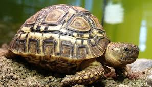

Las tortugas son una especie de animal de tamaño pequeño, tienen una gran caparazón que es más grande que el tamaño de su cuerpo. Suelen ser mansitas por naturaleza pero pueden ser salvajes si llega a ser necesario.
Proporcionar una dieta adecuada es la mejor manera de mantener una tortuga mascota sana y feliz. Entender lo que comen las tortugas es la clave para una alimentación adecuada. Dependiendo de la especie, las tortugas pueden ser herbívoras (que comen sólo plantas), carnívoras (comen sólo carne) u omnívoros (que comen tanto plantas como carne).
Las tiendas de mascotas ofrecen una gama de productos alimenticios para tortugas en pellets, palos y trozos que están especialmente formulados para diferentes especies, además de proporcionar una nutrición balanceada con vitaminas y minerales necesarios para mantener un correcto estado de salud. Sin embargo, este tipo de comida seca y blanda no es la única cosa que las tortugas pueden comer y puede ser más saludable, y a menudo mucho menos costoso, ofrecerles una gama de alimentos frescos.
El caparazón es la parte más distintiva de una tortuga y constituye una placa única que protege a estos reptiles de sus depredadores. Constituido por huesos y especie de placas que le confieren tanto dureza como rigidez.
La parte dorsal del caparazón es conocido como espaldar, mientras la ventral se denomina peto. El movimiento del exoesqueleto de este animal se encuentra limitado por poseer, en el lado interno del espaldar, una fusión entre las costillas y la columna vertebral.
Tan diversas como los tipos de tortuga son los caparazones de este reptil. Según los biólogos, los caparazones pueden ser lisos, rugoso, granulosos, o advertir una combinación de todas esas características.
Si bien el caparazón es algo distintivo de las tortugas debe saberse que este una prolongación de la caja torácica, solo que en este caso suma 50 hueso dermales exclusivos de este ejemplar.
De manera general es importante saber que la estructura del caparazón de la tortuga se encuentra estrechamente vinculada al estilo de vida que asume. Por ejemplo, el caparazón de una tortuga marina, es decir que solo sale del agua cuando se dispone a anidar, es hidrodinámico, ancho por delante y estrecho por atrás, lo que las convierte en animales de torpe andar.